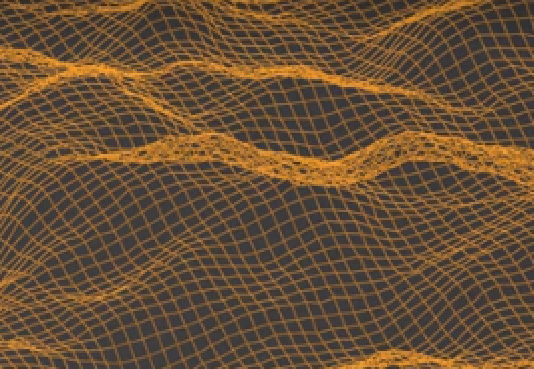

Scattering
Scattering
Everything you need to know about the Scattering operators.
 Distribution
Distribution
The various particle distribution methods explained.
 Culling Masks
Culling Masks
Mask out areas of your scatter easily with the multiple methods available.
 Rotation
Rotation
Have complete control over your particles rotation settings and alignment.
 Scale
Scale
Have control over the scale of your particles in various ways.
 Pattern
Pattern
Add some pattern influencing your particles density/scale with the help of blender texture-data.
 Abiotic
Abiotic
All factors related to your terrain surface that can influence your scatter, such as slope or altitude for
example.
 Proximity
Proximity
Influence your particles density/rotation/scale with the proximity of other elements in your scene.
 Ecosystem
Ecosystem
Create dynamic environment that can influence one another.
 Offset
Offset
Offset your particles, push them around, or add falling effects.
 Wind
Wind
Add wind effects on your scattering by tilting your particles.
 Instancing
Instancing
Have control on how your instances are assigned to your scattered points.
 Manual Mode
Manual Mode
The manual mode is a fantastic alternative to the procedural workflow of Scatter.

Extra
Our plugin has a lot of features! Here's what's in the "Extra" panel.